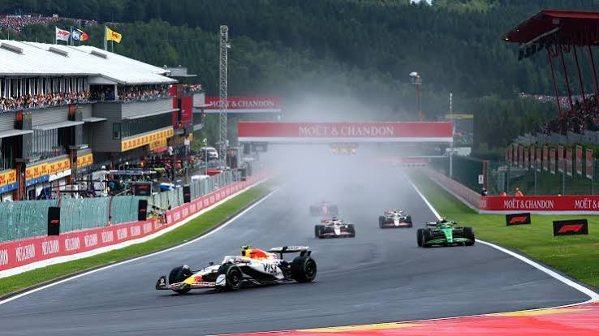
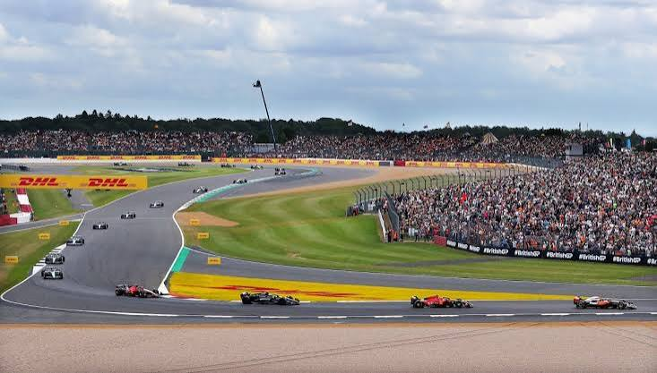
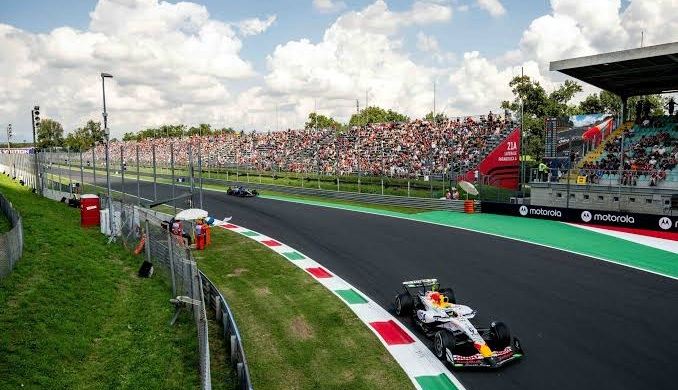
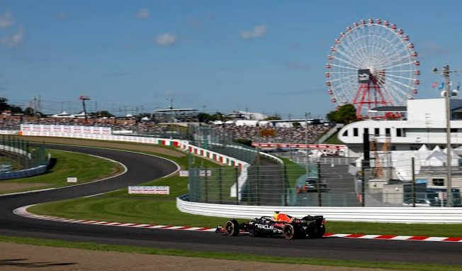
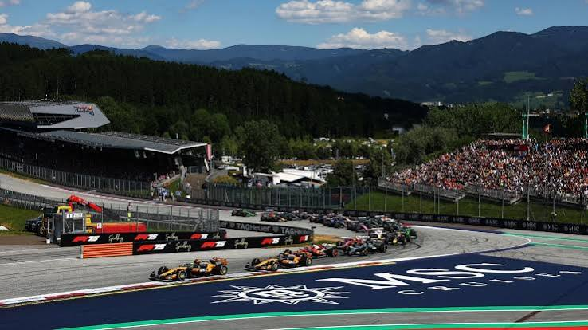

Les circuits du championnat 2026

Circuit de Monaco
Longueur : 3,337 km
Virages : 19
Le circuit urbain le plus célèbre du monde, très étroit et technique.

Spa-Francorchamps (Belgique)
Longueur : 7,004 km
Virages : 20
Un des circuits les plus longs et rapides du calendrier.

Silverstone (Royaume-Uni)
Longueur : 5,891 km
Virages : 18
Berceau historique de la Formule 1, célèbre pour ses virages très rapides.

Monza (Italie)
Longueur : 5,793 km
Virages : 11
Surnommé « Le Temple de la Vitesse », c'est le circuit le plus rapide du calendrier.

Suzuka (Japon)
Longueur : 5,807 km
Virages : 18
Un tracé légendaire en forme de 8, très apprécié par les pilotes.

Red Bull Ring (Autriche)
Longueur : 4,318 km
Virages : 10
Un circuit court et rythmé situé au milieu des montagnes, offrant de belles zones de dépassement.